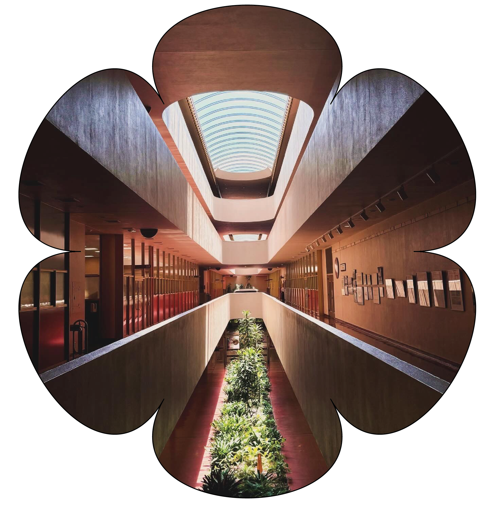

About

Hey! I’m Nikole :)
I’m a self-taught fiber artist and I’ve been knotting since 2018. I came to macramé after finishing my degree in Gender & Women’s Studies at UC Berkeley. I began by making plant hangers for friends and quickly realized how meditative the art of knotting is. Macramé has not only become a form of artistic expression for me but also a way to slow down and ground. I’m passionate about the intersection of creating and mental health, as well as the impact of building artistic community. When I’m not tying knots, you can find me working on graphic design projects, at the beach, taking pictures of pals on a film camera, rollerskating, camping, reading fiction, indulging in early 2000’s shows, or sending you silly memes.
Work


My inspiration largely comes from the world around me as well as my Peruvian heritage. I’ve long been inspired by the artistry of handmade crafts and the use of texture and lively colors. The rich textile traditions of Peru, particularly the use of natural fibers and geometric designs found in Andean weaving, have inspired me to incorporate bold patterns, textures, and organic materials into my work. Each piece you see here is made one at a time by my two hands with intention. I often come to the rope with a feeling, and at times that leads me to creating a funtional piece, like a bag or a plant hanger. At other times, I’ve learned to follow what’s arising and see where the knots take me. I enjoy blending traditional techniques with contemporary aesthetics to create thoughtful pieces that evoke emotion. Macrame has become an outlet in which I express myself and my goal is to create unique works that I hope others find joy in.
Learn
Macramé is an ancient craft with rich symbolism rooted in various cultures around the world. At its core, macramé represents connection, balance, and unity, as its intricate knots intertwine to form beautiful patterns.
The art of knotting symbolizes the binding together of thoughts, relationships, and energy, with each knot acting as a metaphor for life's interwoven paths.
The roots of macramé can be traced back to ancient civilizations like the Babylonians, Egyptians, and later the Moors, who used knotted patterns for decorative purposes.
It spread through Europe, especially in Spain and Italy, during the Middle Ages, and sailors further popularized it by creating macramé works while at sea.
The craft has been used to create everything from simple decorative items to ceremonial and functional objects, symbolizing craftsmanship and the mastery of patience.
Below, you will find videos as well as some information on beginner knots and intermediate patterns to help you get started.
Learn to Macrame
Beginner
Intermediate
Most knot patterns are made with the basic knots, so it is important that you learn as many of them as possible. These simple knots form the foundation for a wide range of projects, from decorative wall hangings to functional items like plant hangers and jewelry. You can create a wide variety of stunning designs with just a few basic knots. Mastering basic knots allows beginners to experiment with different patterns and designs, fostering artistic expression and enhancing fine motor skills. Whether you’re a complete beginner or have some experience, this comprehensive guide will teach you how to tie these essential macrame knots.
Intermediate macramé techniques build on the basics by incorporating more intricate patterns and knots such as the half-hitch, spiral, and square knot variations. In these tutorials, you'll learn how to combine multiple knots to create complex designs like diamond patterns, layered textures, and more refined fringe work. Intermediate projects may include wall hangings, plant holders with decorative details, and even small bags. You'll also explore the use of different types of cords and embellishments like beads to elevate your macramé pieces to the next level.
Blog

Weekly Artist’s Date
As many of you may know by now, I’ve been reading The Artist’s Way by Julie Cameron and doing my best to implement the practices she shares. One of the most refreshing aspects of Julia Cameron’s The Artist’s Way is the concept of the Artist’s Date—a solo excursion dedicated to nurturing your creative spirit. These dates aren’t about producing art but about refilling your creative well by exploring new experiences that bring you joy, curiosity, and inspiration. For me, reading The Artist’s Way has been a gentle reminder that creativity is not a talent for a select few, but a natural part of being human—something we can all cultivate with intention and practice. This week I visited Frank Lloyd Wright’s Marin County Civic Center.
Visiting the Marin County Civic Center is like stepping into a futuristic world shaped by visionary design. The architecture is nothing short of breathtaking. Wright’s signature style—organic, fluid, and in harmony with its surroundings—shines through in the sweeping curves, airy spaces, and distinctive blue domes that crown the structure. The building seems to blend effortlessly into the rolling hills of Marin County, reflecting Wright’s belief in designing structures that coexist with nature. Inside, the grand atrium, with its light-filled corridors and elegant details, feels both serene and vibrant. The Civic Center isn’t just a government building; it’s a work of art that embodies Wright’s genius for creating functional spaces that also inspire-awe. Whether it’s visiting a museum, taking a nature walk, or browsing an eclectic bookstore, the Artist’s Date helps break the monotony of daily routines. It invites play and wonder back into your life, which is crucial for creativity.These small, intentional moments of exploration not only reduce creative block but also spark fresh ideas and a renewed sense of connection to your inner artist. Plus, they serve as a reminder that creativity is fueled by self-care and playful discovery, not just hard work.
References:

On Taking Your Time
In a world that often glorifies hustle and speed, taking your time can feel like an act of rebellion—especially when it comes to creative work. But when we slow down, we give our artistic practice the space it needs to flourish. Creativity doesn’t thrive under pressure; it blooms when we allow ourselves to move with ease, taking the time to truly immerse ourselves in the process.
Rushing through artistic work often leads to frustration, burnout, and work that feels forced. On the other hand, when we approach our art with patience, we open the door to exploration and discovery. This allows ideas to evolve naturally and for mistakes to become opportunities for growth. Whether it's painting, writing, or crafting, slowing down helps us notice the small details—the textures, colors, and nuances—that might be missed when we're racing to finish a project. It invites a deeper connection to the work, a sense of flow, and a more fulfilling creative experience.
Taking your time in artistic practice also promotes self-compassion. When you remove the pressure of deadlines and self-imposed expectations, you allow yourself the freedom to experiment, to make "bad" art, and to find joy in the simple act of creating. This kind of ease brings balance, reduces stress, and often leads to more authentic, meaningful work.
In essence, moving with ease is an act of trust—trusting that creativity can’t be rushed, that the process is just as valuable as the result, and that slowing down will allow you to find your true artistic voice.
So, the next time you feel the urge to rush, take a breath, give yourself time, and watch your creative practice transform.
I’ve found that my best ideas emerge when I allow myself the luxury of time—when I stop rushing and start trusting the process. Creativity, like any meaningful pursuit, needs space to breathe. And in that space, magic happens. In this post, we’ll explore why slowing down can actually fuel your creative fire and how you can incorporate patience and mindfulness into your work.
Knots
Responsive Table goes in this section.
Commissions
Select custom commissions and collaborations, 2020 to present.


Large Macraweave
Large Macrame Waves
Green Macrame Waves
Black Abstract Macrame
Small Macrame Rainbows
Geometric Macrame Headboard Piece
Large Macraweave Piece
Large Macraweave Piece
Large Macraweave Piece
Contact
Please submit a message below for commission inquiries or if you'd like to collaborate creatively. Looking forward to hearing from you :)